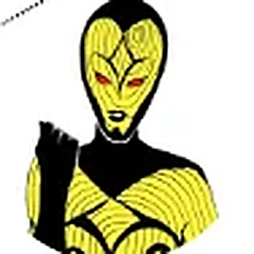
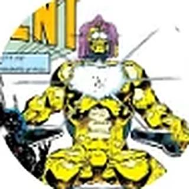
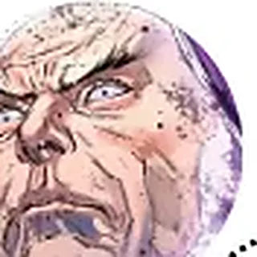
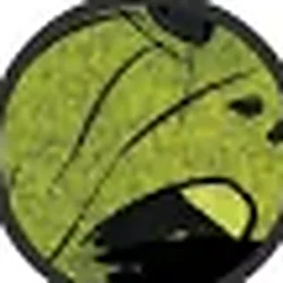
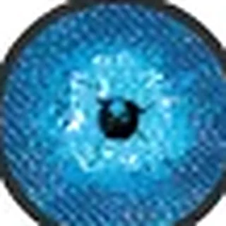
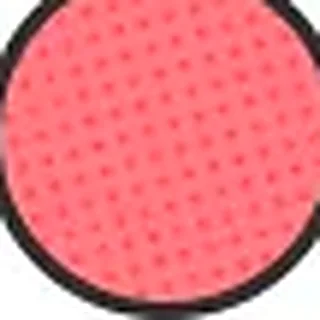

Encyclopédie
574 fiches, Marvel (334) et DC (240) : entités, cosmos, structures, objets, groupes et événements. Chaque fiche indique ses sources, sa première apparition et son niveau de fiabilité.
 Marvel Cosmos et firmaments
Marvel Cosmos et firmaments“Science”!!
 Marvel Événements
Marvel ÉvénementsA.X.E.: Judgment Day
A.X.E.: Judgment Day #1-6
 Marvel Personnages
Marvel PersonnagesA’Lars
le père de Thanos
 DC Personnages
DC PersonnagesAbel
la Maison des secrets
 DC Personnages
DC PersonnagesAbin Sur
le prédécesseur d’Hal Jordan
 Marvel Entités abstraites
Marvel Entités abstraitesAbraxas
l’anti-Éternité
 DC Cosmos et firmaments
DC Cosmos et firmamentsAbsolute Universe
un nouvel univers
 Marvel Célestes et puissances
Marvel Célestes et puissancesAbyss
la sœur d’Ex Nihilo
 Marvel Personnages
Marvel PersonnagesAdam Warlock
le sauveur cosmique
 DC Forces et énergies
DC Forces et énergiesAdara
l'espoir
 Marvel Entités abstraites
Marvel Entités abstraitesAgamotto
membre des Vishanti
 Marvel Personnages
Marvel PersonnagesAgatha Harkness
la sorcière de New Salem
 Marvel Personnages
Marvel PersonnagesAir-Walker
le héraut xandarien
 Marvel Célestes et puissances
Marvel Célestes et puissancesAlephs
les éradicateurs
 Marvel Lieux et dimensions
Marvel Lieux et dimensionsAlfheim
le royaume des Elfes de lumière
 Marvel Objets de pouvoir
Marvel Objets de pouvoirAll-Black the Necrosword
la première arme
 Marvel Ténèbres
Marvel TénèbresAmatsu-Mikaboshi
le Néant originel
 Marvel Personnages
Marvel PersonnagesAmerica Chavez
la voyageuse des réalités
 Marvel Groupes
Marvel GroupesAnnihilation Wave
l’armée de la Zone négative
 Marvel Événements
Marvel ÉvénementsAnnihilation: Conquest
Annihilation: Conquest #1-6
 Marvel Groupes
Marvel GroupesAnnihilators
les poids lourds cosmiques
 Marvel Personnages
Marvel PersonnagesAnnihilus
le seigneur de la Zone Négative
 Marvel Ténèbres
Marvel TénèbresAnti-All
l’ennemi originel
 DC Forces et énergies
DC Forces et énergiesAnti-Life Equation
la preuve que la liberté n'existe pas
 DC Ténèbres
DC TénèbresAnti-Monitor (Mobius)
le dévoreur d'univers
 DC Lieux et dimensions
DC Lieux et dimensionsApokolips
le monde de feu
 Marvel Célestes et puissances
Marvel Célestes et puissancesArishem the Judge
chef de l’Ost Céleste
 Marvel Lieux et dimensions
Marvel Lieux et dimensionsAsgard (Realm)
le royaume des dieux
 Marvel Célestes et puissances
Marvel Célestes et puissancesAshema the Listener
l’Écoutante
 Marvel Célestes et puissances
Marvel Célestes et puissancesAspirants
serviteurs du Premier Firmament
 Marvel Personnages
Marvel PersonnagesAstronomer
le Doyen des étoiles
 DC Personnages
DC PersonnagesAtrocitus
le premier Red Lantern
 Marvel Événements
Marvel ÉvénementsAvengers Forever
Avengers Forever #1-12
 Marvel Événements
Marvel ÉvénementsAvengers vs. X-Men
Avengers vs. X-Men #1-12
 DC Ténèbres
DC TénèbresBarbatos
le dieu-dragon du Multivers noir
 Marvel Personnages
Marvel PersonnagesBaron Mordo (Karl Mordo)
le rival de Doctor Strange
 Marvel Cosmos et firmaments
Marvel Cosmos et firmamentsBattleworld
après les Secret Wars
Marvel Lieux et dimensionsBattleworld (1984)
la planète du Beyonder
 Marvel Ténèbres
Marvel TénèbresBelasco
le seigneur de Limbo
Marvel Lieux et dimensionsBelow-Place
vrai enfer sous tous les autres
 Marvel Personnages
Marvel PersonnagesBeta Ray Bill
le Korbinite digne
 Marvel Lieux et dimensions
Marvel Lieux et dimensionsBeyond Realm
espace sauvage blanc
Marvel Entités abstraitesBeyonders
seigneurs de l’Au-delà
 Marvel Lieux et dimensions
Marvel Lieux et dimensionsBifrost
le pont arc-en-ciel
 DC Personnages
DC PersonnagesBig Barda
la guerrière d’Apokolips
 DC Groupes
DC GroupesBlack Lantern Corps
la mort
 Marvel Groupes
Marvel GroupesBlack Order
les lieutenants de Thanos
 Marvel Groupes
Marvel GroupesBlack Priests
les chasseurs de mondes
 Marvel Ténèbres
Marvel TénèbresBlack Winter
la fin des univers
 DC Événements
DC ÉvénementsBlackest Night
la nuit noire
 Marvel Ténèbres
Marvel TénèbresBlackheart
le fils de Méphisto
 Marvel Lieux et dimensions
Marvel Lieux et dimensionsBlue Area of the Moon
l’oasis kree
 DC Groupes
DC GroupesBlue Lantern Corps
la lumière bleue de l’espoir
 Marvel Personnages
Marvel PersonnagesBlue Marvel
le scientifique cosmique
 Marvel Objets de pouvoir
Marvel Objets de pouvoirBook of the Vishanti
le grimoire de la magie blanche
 DC Personnages
DC PersonnagesBrainiac (Vril Dox)
le collectionneur de mondes
 DC Événements
DC ÉvénementsBrightest Day
le jour le plus clair
 Marvel Personnages
Marvel PersonnagesBrother Voodoo (Jericho Drumm)
le Sorcier Suprême vaudou
 Marvel Personnages
Marvel PersonnagesBruce Banner
l’homme derrière Hulk
 Marvel Groupes
Marvel GroupesBuilders
les architectes de l’univers
 DC Forces et énergies
DC Forces et énergiesButcher
la rage
 DC Personnages
DC PersonnagesCain
la Maison des mystères
 DC Personnages
DC PersonnagesCal
le fils de Michael
 DC Personnages
DC PersonnagesCalliope
la muse, ex-épouse de Dream
 Marvel Lieux et dimensions
Marvel Lieux et dimensionsCancerverse
l’univers sans mort
 Marvel Groupes
Marvel GroupesCaptain Britain Corps
les gardiens du Multivers
 Marvel Personnages
Marvel PersonnagesCaptain Mar-Vell
le premier Captain Marvel
 DC Personnages
DC PersonnagesCarol Ferris (Star Sapphire)
Star Sapphire
Marvel ÉvénementsCelestial Madonna
Giant-Size Avengers #4
 Marvel Célestes et puissances
Marvel Célestes et puissancesCelestials
architectes du cosmos
 Marvel Personnages
Marvel PersonnagesChampion of the Universe
le Doyen lutteur
 Marvel Ténèbres
Marvel TénèbresChthon
l’auteur du Darkhold
 Marvel Personnages
Marvel PersonnagesClea
la Sorcière suprême
 Marvel Personnages
Marvel PersonnagesContemplator
le Doyen méditant
 Marvel Événements
Marvel ÉvénementsContest of Champions
Contest of Champions #1-3
 DC Événements
DC ÉvénementsConvergence
les villes rescapées
 Marvel Objets de pouvoir
Marvel Objets de pouvoirCosmic Control Rod
le sceptre d’Annihilus
 Marvel Objets de pouvoir
Marvel Objets de pouvoirCosmic Cube
le cube qui exauce
 Marvel Groupes
Marvel GroupesCouncil of Reeds
l’assemblée des Reed Richards
 DC Événements
DC ÉvénementsCrisis on Infinite Earths
la première Crise
 Marvel Lieux et dimensions
Marvel Lieux et dimensionsCrossroads (Dimension)
la dimension des passages
 Marvel Entités abstraites
Marvel Entités abstraitesCyttorak
la force du Fléau
 Marvel Lieux et dimensions
Marvel Lieux et dimensionsDa’at: Couldn’t-Be-Shouldn’t-Be
Ni-Ici-Ni-Là · Pays du Peut-Être-Sera
 Marvel Célestes et puissances
Marvel Célestes et puissancesDark Celestials
l’Ost Final
 DC Événements
DC ÉvénementsDark Crisis on Infinite Earths
la Grande Ténèbre
 Marvel Lieux et dimensions
Marvel Lieux et dimensionsDark Dimension
le royaume de Dormammu
 DC Groupes
DC GroupesDark Knights
les Batman du Multivers noir
 DC Cosmos et firmaments
DC Cosmos et firmamentsDark Multiverse
les mondes ratés
 DC Événements
DC ÉvénementsDark Nights: Death Metal
le retour de Perpetua
 DC Événements
DC ÉvénementsDark Nights: Metal
le Multivers noir
 Marvel Forces et énergies
Marvel Forces et énergiesDarkforce
l’énergie des ténèbres
 Marvel Objets de pouvoir
Marvel Objets de pouvoirDarkhold
le livre des péchés
 DC Ténèbres
DC TénèbresDarkseid (Uxas)
le seigneur d'Apokolips
 DC Événements
DC ÉvénementsDC All In
l'élan de 2024
 DC Événements
DC ÉvénementsDC Universe: Rebirth
la mémoire retrouvée
 Marvel Entités abstraites
Marvel Entités abstraitesDeath
la fin de toute vie
Marvel ÉvénementsDeath of Captain Marvel
Marvel Graphic Novel #1
 DC Entités abstraites
DC Entités abstraitesDeath of the Endless
la sœur aînée
 Marvel Groupes
Marvel GroupesDefenders
les voyageurs des cosmos
 DC Entités abstraites
DC Entités abstraitesDelirium of the Endless
autrefois Delight
 Marvel Entités abstraites
Marvel Entités abstraitesDemiurge
le père des dieux anciens
 DC Personnages
DC PersonnagesDesaad
le tortionnaire de Darkseid
 DC Entités abstraites
DC Entités abstraitesDesire of the Endless
le désir
 DC Entités abstraites
DC Entités abstraitesDespair of the Endless
le désespoir
 DC Entités abstraites
DC Entités abstraitesDestiny of the Endless
l'aîné des Éternels
 DC Entités abstraites
DC Entités abstraitesDestruction of the Endless
l'Éternel qui s'en est allé
 Marvel Groupes
Marvel GroupesDeviant Skrulls
les métamorphes
 Marvel Groupes
Marvel GroupesDeviants
la branche instable
 Marvel Célestes et puissances
Marvel Célestes et puissancesDevron the Experimenter
l’Expérimentateur
 DC Personnages
DC PersonnagesDoctor Fate (Kent Nelson)
le sorcier au casque
 DC Personnages
DC PersonnagesDoctor Manhattan
l'homme qui voit le temps
 DC Personnages
DC PersonnagesDoctor Occult (Richard Occult)
le détective du surnaturel
 Marvel Personnages
Marvel PersonnagesDoctor Strange
le Sorcier Suprême
 DC Événements
DC ÉvénementsDoomsday Clock
Watchmen rencontre DC
 Marvel Personnages
Marvel PersonnagesDormammu
le seigneur de la Dimension Noire
 Marvel Personnages
Marvel PersonnagesDrax the Destroyer
le destructeur
 DC Entités abstraites
DC Entités abstraitesDream (Daniel Hall)
le nouveau Dream
 Marvel Lieux et dimensions
Marvel Lieux et dimensionsDream Dimension
le domaine de Cauchemar
 DC Entités abstraites
DC Entités abstraitesDream of the Endless
le seigneur des rêves
 Marvel Ténèbres
Marvel TénèbresDweller-in-Darkness
le dieu de la peur
 DC Lieux et dimensions
DC Lieux et dimensionsEarth 1
les romans graphiques Earth One
 DC Lieux et dimensions
DC Lieux et dimensionsEarth 10
Terre X
 DC Lieux et dimensions
DC Lieux et dimensionsEarth 11
les Amazones au pouvoir
 DC Lieux et dimensions
DC Lieux et dimensionsEarth 12
Batman Beyond
 DC Lieux et dimensions
DC Lieux et dimensionsEarth 13
la Terre occulte
 DC Lieux et dimensions
DC Lieux et dimensionsEarth 14
la Justice League des Assassins
 DC Lieux et dimensions
DC Lieux et dimensionsEarth 15
l’univers cimetière
 DC Lieux et dimensions
DC Lieux et dimensionsEarth 16
The Just
 DC Lieux et dimensions
DC Lieux et dimensionsEarth 17
les Chevaliers atomiques
 DC Lieux et dimensions
DC Lieux et dimensionsEarth 18
les Justice Riders
 DC Lieux et dimensions
DC Lieux et dimensionsEarth 19
Gotham au temps des becs de gaz
 DC Lieux et dimensions
DC Lieux et dimensionsEarth 2
le monde des Merveilles
 DC Lieux et dimensions
DC Lieux et dimensionsEarth 20
la Société des super-héros
 DC Lieux et dimensions
DC Lieux et dimensionsEarth 21
The New Frontier
 DC Lieux et dimensions
DC Lieux et dimensionsEarth 22
Kingdom Come
 DC Lieux et dimensions
DC Lieux et dimensionsEarth 23
le monde de Calvin Ellis
 DC Lieux et dimensions
DC Lieux et dimensionsEarth 24
une Seconde Guerre mondiale sans fin
 DC Lieux et dimensions
DC Lieux et dimensionsEarth 25
Terre-ABC
 DC Lieux et dimensions
DC Lieux et dimensionsEarth 26
le monde des animaux
 DC Lieux et dimensions
DC Lieux et dimensionsEarth 27
les dinosaures
 DC Lieux et dimensions
DC Lieux et dimensionsEarth 28
le Justice Squadron
 DC Lieux et dimensions
DC Lieux et dimensionsEarth 29
Htrae, le monde Bizarro
 DC Lieux et dimensions
DC Lieux et dimensionsEarth 3
le monde du Syndicat du crime
 DC Lieux et dimensions
DC Lieux et dimensionsEarth 30
Red Son
 DC Lieux et dimensions
DC Lieux et dimensionsEarth 31
l’univers pirate
 DC Lieux et dimensions
DC Lieux et dimensionsEarth 32
les héros fusionnés
 DC Lieux et dimensions
DC Lieux et dimensionsEarth 33
Earth-Prime, le monde réel
 DC Lieux et dimensions
DC Lieux et dimensionsEarth 34
Cosmoville
 DC Lieux et dimensions
DC Lieux et dimensionsEarth 35
le Pseudovers
 DC Lieux et dimensions
DC Lieux et dimensionsEarth 36
la Justice 9
 DC Lieux et dimensions
DC Lieux et dimensionsEarth 37
Thrillkiller
 DC Lieux et dimensions
DC Lieux et dimensionsEarth 38
Generations
 DC Lieux et dimensions
DC Lieux et dimensionsEarth 39
les agents du W.O.N.D.E.R.
 DC Lieux et dimensions
DC Lieux et dimensionsEarth 4
Pax Americana
 DC Lieux et dimensions
DC Lieux et dimensionsEarth 40
la Société des super-vilains
 DC Lieux et dimensions
DC Lieux et dimensionsEarth 41
les années 1990
 DC Lieux et dimensions
DC Lieux et dimensionsEarth 42
la Lil’ League
 DC Lieux et dimensions
DC Lieux et dimensionsEarth 43
la Terre vampire
 DC Lieux et dimensions
DC Lieux et dimensionsEarth 44
la Metal League
 DC Lieux et dimensions
DC Lieux et dimensionsEarth 45
Superdoom
 DC Lieux et dimensions
DC Lieux et dimensionsEarth 46
le monde inexploré
 DC Lieux et dimensions
DC Lieux et dimensionsEarth 47
Dreamworld
 DC Lieux et dimensions
DC Lieux et dimensionsEarth 48
Warworld, les Forerunners
 DC Lieux et dimensions
DC Lieux et dimensionsEarth 49
Injustice
 DC Lieux et dimensions
DC Lieux et dimensionsEarth 5
Thunderworld
 DC Lieux et dimensions
DC Lieux et dimensionsEarth 50
les Justice Lords
 DC Lieux et dimensions
DC Lieux et dimensionsEarth 51
Kamandi
 DC Lieux et dimensions
DC Lieux et dimensionsEarth 6
Just Imagine
 DC Lieux et dimensions
DC Lieux et dimensionsEarth 7
le monde détruit par la Gentry
 DC Lieux et dimensions
DC Lieux et dimensionsEarth 8
Angor
 DC Lieux et dimensions
DC Lieux et dimensionsEarth 9
Tangent
 DC Cosmos et firmaments
DC Cosmos et firmamentsEarth-One
la Terre de l'âge d'argent
 DC Cosmos et firmaments
DC Cosmos et firmamentsEarth-Prime
notre monde
 DC Cosmos et firmaments
DC Cosmos et firmamentsEarth-Three
la Terre inversée
 DC Cosmos et firmaments
DC Cosmos et firmamentsEarth-Two
la Terre de l'âge d'or
 DC Ténèbres
DC TénèbresEclipso
l'esprit de la vengeance déchue
 Marvel Célestes et puissances
Marvel Célestes et puissancesEgo the Living Planet
la planète vivante
 Marvel Cosmos et firmaments
Marvel Cosmos et firmamentsEighth Cosmos
Malkuth · 2015 – aujourd’hui
 DC Personnages
DC PersonnagesElaine Belloc
la fille de Michael, devenue Dieu
 Marvel Groupes
Marvel GroupesElders of the Universe
les derniers survivants
 DC Lieux et dimensions
DC Lieux et dimensionsEmerald Space
l’au-delà des Green Lanterns
 DC Forces et énergies
DC Forces et énergiesEmotional Spectrum
les sept lumières
 DC Ténèbres
DC TénèbresEmpty Hand
le Gentry
 Marvel Événements
Marvel ÉvénementsEmpyre
Empyre #0-6
 Marvel Forces et énergies
Marvel Forces et énergiesEnigma Force
le pouvoir du Microvers
 Marvel Entités abstraites
Marvel Entités abstraitesEntropy
l’usure de toute chose
 Marvel Entités abstraites
Marvel Entités abstraitesEon
le gardien du temps cosmique
 Marvel Entités abstraites
Marvel Entités abstraitesEpoch
la gardienne du cosmos
 Marvel Célestes et puissances
Marvel Célestes et puissancesEson the Searcher
le Céleste qui cherche
 Marvel Groupes
Marvel GroupesEternals
les immortels créés par les Célestes
 Marvel Entités abstraites
Marvel Entités abstraitesEternity
Naissance · Bien · Science
 Marvel Entités abstraites
Marvel Entités abstraitesEternity
le temps et l’existence
 DC Ténèbres
DC TénèbresEtrigan the Demon
le démon qui rime
 DC Personnages
DC PersonnagesEurydice
l’épouse d’Orphée
 Marvel Célestes et puissances
Marvel Célestes et puissancesEx Nihilo
le jardinier des Bâtisseurs
 Marvel Célestes et puissances
Marvel Célestes et puissancesExitar the Exterminator
le plus grand des Célestes
 Marvel Lieux et dimensions
Marvel Lieux et dimensionsExo-Space
espace eldritch · zone neutre
 Marvel Objets de pouvoir
Marvel Objets de pouvoirEye of Agamotto (Knowledge)
l’amulette du Sorcier suprême
 Marvel Personnages
Marvel PersonnagesFallen One
le premier héraut
 Marvel Lieux et dimensions
Marvel Lieux et dimensionsFar Shore
bord du Dehors
 DC Lieux et dimensions
DC Lieux et dimensionsFiddler's Green
un lieu du Rêve
 Marvel Cosmos et firmaments
Marvel Cosmos et firmamentsFifth Cosmos
faiseur de magie, tisserand des illusions
 DC Lieux et dimensions
DC Lieux et dimensionsFifth Dimension
le monde des imps
 DC Événements
DC ÉvénementsFinal Crisis
le jour où le mal a gagné
 Marvel Personnages
Marvel PersonnagesFirelord
le héraut de flamme
 Marvel Cosmos et firmaments
Marvel Cosmos et firmamentsFirst Cosmos
le premier firmament, l’univers originel
 DC Événements
DC ÉvénementsFlashpoint
la chronologie brisée
 Marvel Cosmos et firmaments
Marvel Cosmos et firmamentsFourth Cosmos
le Pèlerin, habité par les archétypes
 Marvel Personnages
Marvel PersonnagesFranklin Richards
le créateur de mondes
 Marvel Entités abstraites
Marvel Entités abstraitesGaea
l’esprit de la Terre
 Marvel Célestes et puissances
Marvel Célestes et puissancesGalactus
le dévoreur de mondes
Marvel PersonnagesGalan of Taa
l’homme avant Galactus
 Marvel Lieux et dimensions
Marvel Lieux et dimensionsGamaliel: Un-Beyond
Sous-Moteur · Trône d’Onyx
 Marvel Célestes et puissances
Marvel Célestes et puissancesGamiel the Manipulator
le Manipulateur
 Marvel Forces et énergies
Marvel Forces et énergiesGamma radiation
la porte verte
 Marvel Célestes et puissances
Marvel Célestes et puissancesGammenon the Gatherer
le collecteur
 Marvel Personnages
Marvel PersonnagesGamora
la fille adoptive de Thanos
 DC Personnages
DC PersonnagesGanthet
le Gardien rebelle
 Marvel Personnages
Marvel PersonnagesGardener
le Doyen botaniste
 DC Lieux et dimensions
DC Lieux et dimensionsGemworld
le monde des gemmes
 Marvel Personnages
Marvel PersonnagesGenis-Vell
le fils de Mar-Vell
 Marvel Lieux et dimensions
Marvel Lieux et dimensionsGevurah: Sphere of Judgment
la Cité Brisée
 Marvel Personnages
Marvel PersonnagesGladiator
le prétorien Shi’ar
 Marvel Personnages
Marvel PersonnagesGod Emperor Doom
le dieu de Battleworld
 Marvel Lieux et dimensions
Marvel Lieux et dimensionsGod Quarry
le cœur de l’existence
 Marvel Ténèbres
Marvel TénèbresGorr the God Butcher
le massacreur de dieux
 Marvel Personnages
Marvel PersonnagesGrandmaster
le joueur éternel
 DC Personnages
DC PersonnagesGranny Goodness
la dresseuse d’orphelins
 DC Ténèbres
DC TénèbresGreat Darkness
l'obscurité originelle
 DC Groupes
DC GroupesGreen Lantern Corps
les gardiens de l'espace
 Marvel Groupes
Marvel GroupesGuardians of the Galaxy
les protecteurs cosmiques
 DC Groupes
DC GroupesGuardians of the Universe
les fondateurs du Corps
 DC Personnages
DC PersonnagesHal Jordan
le Green Lantern de la Terre
 Marvel Lieux et dimensions
Marvel Lieux et dimensionsHala (Planet)
le monde-trône kree
 DC Personnages
DC PersonnagesHarbinger (Lyla Michaels)
la messagère du Monitor
 Marvel Célestes et puissances
Marvel Célestes et puissancesHargen the Measurer
l’Arpenteur
 Marvel Entités abstraites
Marvel Entités abstraitesHate
la répulsion universelle
 Marvel Personnages
Marvel PersonnagesHe Who Remains
le dernier directeur de la TVA
 Marvel Objets de pouvoir
Marvel Objets de pouvoirHeart of the Universe
la source de toute puissance
 DC Personnages
DC PersonnagesHector Hall
le père de Daniel
 DC Personnages
DC PersonnagesHeggra
la mère de Darkseid
 Marvel Lieux et dimensions
Marvel Lieux et dimensionsHel
le royaume des morts de Hela
 Marvel Personnages
Marvel PersonnagesHela
déesse de la mort asgardienne
 DC Lieux et dimensions
DC Lieux et dimensionsHell
le royaume des damnés
 Marvel Personnages
Marvel PersonnagesHellstrom (Daimon Hellstrom)
le fils de Satan
 Marvel Lieux et dimensions
Marvel Lieux et dimensionsHeven
le royaume des Anges
 DC Personnages
DC PersonnagesHighfather (Izaya)
le chef de New Genesis
 Marvel Lieux et dimensions
Marvel Lieux et dimensionsHod: Overspace
Jonction vers Partout
 Marvel Entités abstraites
Marvel Entités abstraitesHoggoth
membre des Vishanti
 DC Lieux et dimensions
DC Lieux et dimensionsHouse of Heroes
le cœur de l’Orrerie
 Marvel Événements
Marvel ÉvénementsHunger
Hunger #1-4
Marvel Lieux et dimensionsHyperspace
« sub-space »
 DC Cosmos et firmaments
DC Cosmos et firmamentsHypertime
le réseau des chronologies
 Marvel Personnages
Marvel PersonnagesIkaris
l’Éternel
 Marvel Groupes
Marvel GroupesIlluminati
le conseil secret
 Marvel Personnages
Marvel PersonnagesImmortus
le maître des Limbes
 DC Ténèbres
DC TénèbresImperiex
le destructeur d'univers
 Marvel Entités abstraites
Marvel Entités abstraitesIn-Betweener
l’équilibre des contraires
 DC Groupes
DC GroupesIndigo Tribe
la lumière indigo de la compassion
 DC Personnages
DC PersonnagesIndigo-1 (Iroque)
la cheffe de la Tribu Indigo
 DC Événements
DC ÉvénementsInfinite Crisis
le retour des Terres
 DC Événements
DC ÉvénementsInfinite Frontier
la nouvelle frontière
 Marvel Entités abstraites
Marvel Entités abstraitesInfinity
Mort · Bien · Magie

Marvel Entités abstraitesInfinity
l’espace sans fin
 Marvel Événements
Marvel ÉvénementsInfinity
Infinity #1-6
 Marvel Événements
Marvel ÉvénementsInfinity Crusade
Infinity Crusade #1-6
 Marvel Objets de pouvoir
Marvel Objets de pouvoirInfinity Gauntlet
les six gemmes réunies
 Marvel Objets de pouvoir
Marvel Objets de pouvoirInfinity Stones
Espace, Réalité, Pouvoir, Âme, Esprit, Temps
 Marvel Événements
Marvel ÉvénementsInfinity War
Infinity War #1-6
 Marvel Événements
Marvel ÉvénementsInfinity Wars
Infinity Wars #1-6
 Marvel Groupes
Marvel GroupesInfinity Watch
les gardiens des Gemmes
 DC Forces et énergies
DC Forces et énergiesIon
la volonté
Marvel GroupesIvory Kings
les seigneurs blancs
 Marvel Personnages
Marvel PersonnagesJean Grey
l’hôte du Phénix
 Marvel Célestes et puissances
Marvel Célestes et puissancesJemiah the Analyzer
le savant de l’Ost
 DC Personnages
DC PersonnagesJohn Constantine
le mage de Hellblazer
 Marvel Lieux et dimensions
Marvel Lieux et dimensionsJotunheim
le royaume des Géants
 DC Groupes
DC GroupesJustice Incarnate
les gardiens des 52 Terres
 DC Groupes
DC GroupesJustice League Dark
l’équipe de la magie
 DC Personnages
DC PersonnagesKalel (Earth 23)
Superman et président
 DC Personnages
DC PersonnagesKalibak
le fils aîné de Darkseid
 DC Personnages
DC PersonnagesKamandi (Earth 51)
le dernier garçon sur Terre
 Marvel Lieux et dimensions
Marvel Lieux et dimensionsKamar-Taj
le temple de l’Ancien
 Marvel Personnages
Marvel PersonnagesKang the Conqueror
le conquérant du temps
 Marvel Lieux et dimensions
Marvel Lieux et dimensionsKeter: House of Ideas
Couronne de la Création
 DC Personnages
DC PersonnagesKlarion the Witch Boy
le sorcier-enfant
 Marvel Lieux et dimensions
Marvel Lieux et dimensionsKnowhere
la tête du Céleste
 Marvel Ténèbres
Marvel TénèbresKnull
le Roi en Noir
 Marvel Personnages
Marvel PersonnagesKorvac
l’homme devenu dieu
Marvel ÉvénementsKorvac Saga
Avengers #167-177
 Marvel Groupes
Marvel GroupesKree
l’empire militaire
 Marvel Événements
Marvel ÉvénementsKree-Skrull War
Avengers #89-97
 DC Personnages
DC PersonnagesKrona
le Gardien déchu
 Marvel Entités abstraites
Marvel Entités abstraitesKronos
le Titan devenu le Temps
 Marvel Entités abstraites
Marvel Entités abstraitesKubik
le Cube devenu être
 DC Personnages
DC PersonnagesKyle Rayner
le porteur de toutes les lumières
 Marvel Lieux et dimensions
Marvel Lieux et dimensionsKyln
la prison cosmique
 DC Personnages
DC PersonnagesLarfleeze (Agent Orange)
l’Agent Orange
 DC Forces et énergies
DC Forces et énergiesLife Entity
la lumière blanche
 Marvel Personnages
Marvel PersonnagesLifebringer One
le premier héros
 DC Ténèbres
DC TénèbresLilith
la mère des Lilim
 Marvel Lieux et dimensions
Marvel Lieux et dimensionsLilith: Limbo
Autre-Lieu · Royaume démoniaque
 DC Lieux et dimensions
DC Lieux et dimensionsLimbo
le lieu des oubliés
Marvel Lieux et dimensionsLimbo (Otherplace)
l’Autre-Lieu
 Marvel Entités abstraites
Marvel Entités abstraitesLiving Tribunal
Mort · Bien · Science

Marvel Entités abstraitesLiving Tribunal
juge du multivers
 Marvel Entités abstraites
Marvel Entités abstraitesLogos
le Verbe du Premier Firmament
 Marvel Personnages
Marvel PersonnagesLoki
le dieu des histoires
 Marvel Entités abstraites
Marvel Entités abstraitesLord Chaos
Naissance · Mal · Magie
 Marvel Entités abstraites
Marvel Entités abstraitesLord Chaos
le désordre
 DC Groupes
DC GroupesLords of Chaos
les forces du désordre
 DC Groupes
DC GroupesLords of Order
les gardiens de l'ordre
Marvel Entités abstraitesLove
l’attraction universelle
 DC Personnages
DC PersonnagesLucien
le bibliothécaire du Rêve
 DC Personnages
DC PersonnagesLucifer Morningstar
l'ange déchu
 DC Personnages
DC PersonnagesLyta Hall (Fury)
la mère de Daniel
 Marvel Objets de pouvoir
Marvel Objets de pouvoirM’Kraan Crystal
le nexus des réalités
 DC Personnages
DC PersonnagesMadame Xanadu (Nimue Inwudu)
la voyante
 Marvel Cosmos et firmaments
Marvel Cosmos et firmamentsMagic
 Marvel Personnages
Marvel PersonnagesMagik (Illyana Rasputina)
la sorcière suprême de Limbo
 Marvel Groupes
Marvel GroupesMagistrati
les hérauts du Tribunal
 Marvel Personnages
Marvel PersonnagesMagus
le futur sombre d’Adam
Marvel Lieux et dimensionsMalkuth: Eighth Cosmos
Multivers Marvel · 2015 – présent
 DC Personnages
DC PersonnagesMamaragan (Shazam)
le gardien du Rocher
 DC Ténèbres
DC TénèbresMandrakk (Dax Novu)
le Monitor noir
 Marvel Personnages
Marvel PersonnagesMantis
la Madone céleste
 Marvel Ténèbres
Marvel TénèbresMany-Angled Ones
les seigneurs du Cancerverse
 Marvel Groupes
Marvel GroupesMap Makers
les nettoyeurs de réalités
 Marvel Ténèbres
Marvel TénèbresMarduk Kurios (Satan)
le père des Hellstrom
Marvel Cosmos et firmamentsMarvels
 Marvel Cosmos et firmaments
Marvel Cosmos et firmamentsMarvels
 Marvel Entités abstraites
Marvel Entités abstraitesMaster Order
Naissance · Mal · Science

Marvel Entités abstraitesMaster Order
la loi absolue
 DC Personnages
DC PersonnagesMatthew the Raven (Matthew Cable)
le corbeau de Dream
 DC Personnages
DC PersonnagesMazikeen
l’alliée de Lucifer
 Marvel Ténèbres
Marvel TénèbresMephista
la fille de Méphisto
 Marvel Personnages
Marvel PersonnagesMephisto
le seigneur d’un enfer
 DC Personnages
DC PersonnagesMetron
le chercheur de savoir
 DC Personnages
DC PersonnagesMichael Demiurgos
l'archange démiurge
 Marvel Lieux et dimensions
Marvel Lieux et dimensionsMicroverse
univers subatomique
 Marvel Lieux et dimensions
Marvel Lieux et dimensionsMidgard (Earth)
la Terre des humains
 Marvel Objets de pouvoir
Marvel Objets de pouvoirMind Stone
la gemme jaune
 DC Ténèbres
DC TénèbresMister Mind
le ver des mondes
 DC Personnages
DC PersonnagesMister Miracle (Scott Free)
le roi de l’évasion
 DC Personnages
DC PersonnagesMister Mxyzptlk
le farceur de la 5e dimension
 Marvel Objets de pouvoir
Marvel Objets de pouvoirMjolnir
le marteau de Thor
 DC Objets de pouvoir
DC Objets de pouvoirMobius Chair
le trône du savoir
 Marvel Lieux et dimensions
Marvel Lieux et dimensionsMojoverse
la dimension spectacle
 Marvel Personnages
Marvel PersonnagesMolecule Man
la bombe des Beyonders
 DC Célestes et puissances
DC Célestes et puissancesMonitor (Mar Novu)
l'observateur du Multivers
 DC Cosmos et firmaments
DC Cosmos et firmamentsMonitor Sphere
l’enveloppe du Multivers
 DC Groupes
DC GroupesMonitors
les gardiens du Multivers
 Marvel Personnages
Marvel PersonnagesMoondragon
la télépathe de Titan
 Marvel Personnages
Marvel PersonnagesMorg
le bourreau
 Marvel Entités abstraites
Marvel Entités abstraitesMoridun / Omnimax
Sorcier Suprême du Cinquième Cosmos
Marvel Lieux et dimensionsMultiverse
le Vortex Cosmique
DC Cosmos et firmamentsMultiverse
les Terres parallèles
 Marvel Cosmos et firmaments
Marvel Cosmos et firmamentsMultiversity
 Marvel Lieux et dimensions
Marvel Lieux et dimensionsMuspelheim
le royaume du feu
 DC Personnages
DC PersonnagesNabu
le Seigneur de l'Ordre
 Marvel Personnages
Marvel PersonnagesNebula
la petite-fille de Thanos
 Marvel Lieux et dimensions
Marvel Lieux et dimensionsNegative Zone
univers d’antimatière
 DC Ténèbres
DC TénèbresNekron
le seigneur de la non-vie
 Marvel Entités abstraites
Marvel Entités abstraitesNemesis
l’être d’avant tout
 Marvel Lieux et dimensions
Marvel Lieux et dimensionsNetzach: Far Beyond the Worlds
le jardin où pousse la magie
 DC Cosmos et firmaments
DC Cosmos et firmamentsNew Earth
la Terre post-Crise
 DC Lieux et dimensions
DC Lieux et dimensionsNew Genesis
le monde lumineux
 Marvel Lieux et dimensions
Marvel Lieux et dimensionsNexus of All Realities
le carrefour des mondes
 Marvel Célestes et puissances
Marvel Célestes et puissancesNezarr the Calculator
le mathématicien
 Marvel Lieux et dimensions
Marvel Lieux et dimensionsNidavellir
le royaume des Nains
 Marvel Lieux et dimensions
Marvel Lieux et dimensionsNiffleheim
le royaume de la brume
 DC Entités abstraites
DC Entités abstraitesNight (Mother Night)
la mère des Endless
 Marvel Entités abstraites
Marvel Entités abstraitesNightmare
le maître des rêves
 DC Célestes et puissances
DC Célestes et puissancesNix Uotan
le dernier Monitor
 Marvel Personnages
Marvel PersonnagesNova (Frankie Raye)
la héraut de feu
 Marvel Personnages
Marvel PersonnagesNova (Richard Rider)
le dernier centurion
 Marvel Groupes
Marvel GroupesNova Corps
la police de Xandar
Marvel Forces et énergiesNova Force
l’énergie des Nova Corps
 DC Objets de pouvoir
DC Objets de pouvoirNth Metal
le métal de Thanagar
 DC Lieux et dimensions
DC Lieux et dimensionsOa
le centre de l'univers
 Marvel Entités abstraites
Marvel Entités abstraitesOblivion
Mort · Mal · Magie
 Marvel Entités abstraites
Marvel Entités abstraitesOblivion
le néant
 Marvel Personnages
Marvel PersonnagesOdin
le Père de toutes choses
 Marvel Groupes
Marvel GroupesOmega Council
les gardiens du moteur
Marvel Forces et énergiesOmega Force
la source des Beyonders
Marvel Lieux et dimensionsOmniverse
toutes les fictions
DC Cosmos et firmamentsOmniverse
au-delà du Multivers
 Marvel Entités abstraites
Marvel Entités abstraitesOne-Above-All
tout en haut
Marvel Entités abstraitesOne-Above-All
le créateur suprême
 Marvel Entités abstraites
Marvel Entités abstraitesOne-Below-All
tout en bas
Marvel TénèbresOne-Below-All
le mal absolu
 Marvel Célestes et puissances
Marvel Célestes et puissancesOneg the Prober
l’explorateur
 Marvel Événements
Marvel ÉvénementsOperation: Galactic Storm
Captain America #398
 DC Forces et énergies
DC Forces et énergiesOphidian
l'avarice
 DC Groupes
DC GroupesOrange Lantern Corps
la lumière orange de l’avarice
 Marvel Événements
Marvel ÉvénementsOriginal Sin
Original Sin #1-8
 DC Personnages
DC PersonnagesOrion
le guerrier de New Genesis
 DC Personnages
DC PersonnagesOrpheus
le fils de Dream
DC Cosmos et firmamentsOrrery of Worlds
les 52 univers en orbite
 Marvel Entités abstraites
Marvel Entités abstraitesOshtur
membre des Vishanti
 DC Ténèbres
DC TénèbresOtherkind
au-delà de la magie
 Marvel Lieux et dimensions
Marvel Lieux et dimensionsOtherworld
le royaume celtique
Marvel Lieux et dimensionsOuter Void
abîme d’Infinité
Marvel Lieux et dimensionsOverspace
royaume des Abstraits
 DC Cosmos et firmaments
DC Cosmos et firmamentsOvervoid
la page blanche
 DC Forces et énergies
DC Forces et énergiesParallax
la peur
 DC Personnages
DC PersonnagesPariah (Kell Mossa)
le témoin des fins
 DC Groupes
DC GroupesParliament of Trees
les anciens avatars du Vert
 DC Célestes et puissances
DC Célestes et puissancesPerpetua
la mère du Multivers
 Marvel Groupes
Marvel GroupesPhalanx
le collectif techno-organique
 DC Personnages
DC PersonnagesPhantom Stranger
le témoin errant
 DC Lieux et dimensions
DC Lieux et dimensionsPhantom Zone
la prison de Krypton
 Marvel Forces et énergies
Marvel Forces et énergiesPhoenix Force
vie et renaissance
 Marvel Personnages
Marvel PersonnagesPossessor
le Doyen survivant
 Marvel Forces et énergies
Marvel Forces et énergiesPower Cosmic
l’énergie de Galactus
 Marvel Objets de pouvoir
Marvel Objets de pouvoirPower Stone
la gemme violette
 DC Forces et énergies
DC Forces et énergiesPredator
l'amour
 DC Cosmos et firmaments
DC Cosmos et firmamentsPrime Earth
la Terre principale depuis 2011
 Marvel Célestes et puissances
Marvel Célestes et puissancesProemial Gods
les premiers dieux
 DC Forces et énergies
DC Forces et énergiesProselyte
la compassion
 Marvel Forces et énergies
Marvel Forces et énergiesQuantum energy
les Bracelets Quantiques
 Marvel Personnages
Marvel PersonnagesQuasar
le protecteur de l’univers
Marvel Entités abstraitesQueen of Nevers
le Quatrième Cosmos devenu reine
 DC Groupes
DC GroupesQuintessence
les sages du cosmos
Marvel PersonnagesRabum Alal
le Dieu-Fatalité
 Marvel Objets de pouvoir
Marvel Objets de pouvoirReality Stone
la gemme rouge
 DC Groupes
DC GroupesRed Lantern Corps
la lumière rouge de la rage
 Marvel Personnages
Marvel PersonnagesRed Shift
le héraut artificiel
 Marvel Personnages
Marvel PersonnagesReed Richards
le rebâtisseur
 DC Lieux et dimensions
DC Lieux et dimensionsRock of Eternity
au pied de l’Orrerie
 Marvel Personnages
Marvel PersonnagesRonan the Accuser
l’Accusateur kree

Marvel Cosmos et firmamentsRuins
 Marvel Personnages
Marvel PersonnagesRunner
le Doyen de la vitesse
 DC Forces et énergies
DC Forces et énergiesSage Force
la sagesse
 DC Personnages
DC PersonnagesSaint Walker (Bro'Dee Walker)
le premier Blue Lantern
 Marvel Lieux et dimensions
Marvel Lieux et dimensionsSakaar
la planète de l’exil
 Marvel Lieux et dimensions
Marvel Lieux et dimensionsSamael: Underspace
sous le Microvers
 Marvel Lieux et dimensions
Marvel Lieux et dimensionsSanctum Sanctorum
la maison de Doctor Strange
 DC Personnages
DC PersonnagesSandalphon
un ange de la Cité d’Argent
 Marvel Personnages
Marvel PersonnagesSatana Hellstrom
la fille de Satan
 Marvel Entités abstraites
Marvel Entités abstraitesSatannish
le démon des pactes
 Marvel Personnages
Marvel PersonnagesScarlet Witch (Wanda Maximoff)
la sorcière du chaos
 Marvel Célestes et puissances
Marvel Célestes et puissancesScathan the Approver
l’Approbateur
 Marvel Cosmos et firmaments
Marvel Cosmos et firmamentsSecond Cosmos
le premier multivers, origine de la Force Oméga
 Marvel Événements
Marvel ÉvénementsSecret Invasion
Secret Invasion #1-8
 Marvel Personnages
Marvel PersonnagesSentry
le héros et le Void
 Marvel Objets de pouvoir
Marvel Objets de pouvoirSerpent Crown
la couronne de Set
 Marvel Personnages
Marvel PersonnagesSersi
l’Éternelle
 Marvel Ténèbres
Marvel TénèbresSet
le dieu-serpent
Marvel Cosmos et firmamentsSeventh Cosmos
Multivers Marvel 1961 – 2015
 DC Lieux et dimensions
DC Lieux et dimensionsSeventh Dimension
au-delà de la Sixième
 Marvel Groupes
Marvel GroupesShi’ar
l’empire aviaire
 Marvel Ténèbres
Marvel TénèbresShuma-Gorath
l’Ancien aux tentacules
 DC Lieux et dimensions
DC Lieux et dimensionsSilver City
le Ciel
 Marvel Personnages
Marvel PersonnagesSilver Surfer
le héraut de Galactus
 DC Personnages
DC PersonnagesSinestro
la peur faite loi
 DC Groupes
DC GroupesSinestro Corps
la lumière jaune de la peur
 DC Événements
DC ÉvénementsSinestro Corps War
la peur contre la volonté

Marvel Cosmos et firmamentsSingularity
 Marvel Ténèbres
Marvel TénèbresSinifer
le géniteur de Dormammu et Umar
Marvel Cosmos et firmamentsSixth Cosmos
inventeur de la science, bâtisseur de la jonction
 DC Lieux et dimensions
DC Lieux et dimensionsSixth Dimension
la dimension des Monitors
DC Lieux et dimensionsSkyland
un royaume de la Sphère des dieux
 Marvel Objets de pouvoir
Marvel Objets de pouvoirSoul Stone
la gemme orange
 DC Lieux et dimensions
DC Lieux et dimensionsSource Wall
la frontière de la Création
 Marvel Objets de pouvoir
Marvel Objets de pouvoirSpace Stone
la gemme bleue
 DC Forces et énergies
DC Forces et énergiesSpeed Force
la force de la vitesse
DC Lieux et dimensionsSphere of the Gods
le royaume des idées
 DC Groupes
DC GroupesStar Sapphire Corps
la lumière violette de l’amour
 Marvel Personnages
Marvel PersonnagesStar-Lord
le chef des Gardiens
 Marvel Forces et énergies
Marvel Forces et énergiesStarbrand
l’arme planétaire
 Marvel Personnages
Marvel PersonnagesStardust
le héraut zélé
 Marvel Personnages
Marvel PersonnagesStarfox
le frère de Thanos
 DC Personnages
DC PersonnagesSteppenwolf
l’oncle de Darkseid
 DC Forces et énergies
DC Forces et énergiesStill Force
l'immobilité
 DC Forces et énergies
DC Forces et énergiesStrength Force
la force physique
 DC Personnages
DC PersonnagesSuperboy-Prime
le Superman de Terre-Prime
 Marvel Lieux et dimensions
Marvel Lieux et dimensionsSuperflow
espace onirique entre les réalités
 Marvel Lieux et dimensions
Marvel Lieux et dimensionsSvartalfheim
le royaume des Elfes noirs
 Marvel Forces et énergies
Marvel Forces et énergiesSymbiotes
la Ruche de Knull
 Marvel Lieux et dimensions
Marvel Lieux et dimensionsTaa II
le vaisseau-monde
 Marvel Personnages
Marvel PersonnagesTaaia
la mère de Galan
 Marvel Lieux et dimensions
Marvel Lieux et dimensionsTagiriron: Cold Black Room
Royaume des Ombres · Terre Sans Soleils
 Marvel Célestes et puissances
Marvel Célestes et puissancesTefral the Surveyor
l’Inspecteur
 Marvel Personnages
Marvel PersonnagesTerrax the Tamer
le dompteur de mondes
 Marvel Personnages
Marvel PersonnagesThanos
le Titan fou
 Marvel Événements
Marvel ÉvénementsThanos Imperative
Thanos Imperative #1-6
 Marvel Lieux et dimensions
Marvel Lieux et dimensionsThaumiel: Below-Place
Terres-du-Dessous · Royaume Gamma
 Marvel Personnages
Marvel PersonnagesThe Ancient One (Yao)
le maître de Doctor Strange

Marvel Cosmos et firmamentsThe Archetypes
 DC Ténèbres
DC TénèbresThe Batman Who Laughs
le pire des Batman
 Marvel Personnages
Marvel PersonnagesThe Beyonder
l’enfant de l’Au-delà
 DC Lieux et dimensions
DC Lieux et dimensionsThe Bleed
l'espace entre les mondes
 Marvel Personnages
Marvel PersonnagesThe Collector
le conservateur cosmique
 DC Ténèbres
DC TénèbresThe Corinthian
le cauchemar de Dream
 DC Lieux et dimensions
DC Lieux et dimensionsThe Dreaming
le royaume de Dream
 DC Groupes
DC GroupesThe Endless
les sept fonctions de l'existence
Marvel Cosmos et firmamentsThe First Sentinel & the All-Void
 Marvel Célestes et puissances
Marvel Célestes et puissancesThe Fulcrum
le dieu des Célestes
 DC Ténèbres
DC TénèbresThe Gentry
les parasites du Survide
 DC Forces et énergies
DC Forces et énergiesThe Green
la force de la vie végétale
 DC Forces et énergies
DC Forces et énergiesThe Grey
la force des champignons
 DC Célestes et puissances
DC Célestes et puissancesThe Hands
les bâtisseurs d'univers
 Marvel Personnages
Marvel PersonnagesThe Maker
le Reed Richards maléfique
Marvel Lieux et dimensionsThe Manifestations (Infinites)
les Infinis
 DC Événements
DC ÉvénementsThe Multiversity
la carte du Multivers
 DC Entités abstraites
DC Entités abstraitesThe Presence
le Créateur
 Marvel Célestes et puissances
Marvel Célestes et puissancesThe Progenitor
le Céleste malade
 DC Forces et énergies
DC Forces et énergiesThe Red
la force de la vie animale
 DC Ténèbres
DC TénèbresThe Rot (The Black)
la force de la mort et de la décomposition
 DC Entités abstraites
DC Entités abstraitesThe Source
l'énergie primordiale
 DC Célestes et puissances
DC Célestes et puissancesThe Spectre
l'Esprit de la vengeance divine
 Marvel Entités abstraites
Marvel Entités abstraitesThe Stranger
le juge errant
 Marvel Groupes
Marvel GroupesThe Ultimates
les résolveurs de problèmes cosmiques
 DC Entités abstraites
DC Entités abstraitesThe Writer (Grant Morrison)
l’auteur dans le récit
 Marvel Entités abstraites
Marvel Entités abstraitesThe-Natural-Order-of-Things
Mort · Mal · Science
 Marvel Entités abstraites
Marvel Entités abstraitesThe-Powers-That-Be
Naissance · Bien · Magie
 Marvel Cosmos et firmaments
Marvel Cosmos et firmamentsThird Cosmos
le commencement du récit, créateur de Lifebringer One
 Marvel Personnages
Marvel PersonnagesThor
dieu du tonnerre, héraut un temps
 Marvel Célestes et puissances
Marvel Célestes et puissancesTiamut
le Céleste exilé
 Marvel Lieux et dimensions
Marvel Lieux et dimensionsTiferet: White Hot Room
Cœur de toutes choses
 DC Entités abstraites
DC Entités abstraitesTime (Father Time)
le père des Endless
 Marvel Objets de pouvoir
Marvel Objets de pouvoirTime Stone
la gemme verte
 Marvel Groupes
Marvel GroupesTime Variance Authority
les gardiens du temps
 Marvel Groupes
Marvel GroupesTime-Keepers
les maîtres de la TVA
 DC Personnages
DC PersonnagesTimothy Hunter
le futur grand magicien
 Marvel Lieux et dimensions
Marvel Lieux et dimensionsTitan
la lune des Éternels
 Marvel Personnages
Marvel PersonnagesTrader
le Doyen du négoce
 Marvel Événements
Marvel ÉvénementsTrial of Reed Richards
Fantastic Four #262
 DC Ténèbres
DC TénèbresTrigon
le démon interdimensionnel
 DC Groupes
DC GroupesTrinity of Sin
Pandora, le Stranger, la Question
 Marvel Groupes
Marvel GroupesTwilight Court
les gardiens de l’ombre
 Marvel Objets de pouvoir
Marvel Objets de pouvoirTwilight Sword (Surtur)
l’épée de Surtur
 Marvel Personnages
Marvel PersonnagesTyrant
la créature rebelle de Galactus
 Marvel Personnages
Marvel PersonnagesUatu the Watcher
le Gardien de la Terre
 Marvel Objets de pouvoir
Marvel Objets de pouvoirUltimate Nullifier
l’arme absolue
 DC Personnages
DC PersonnagesUltra Comics
le héros de papier
 DC Groupes
DC GroupesUltraviolet Corps
la lumière invisible
 Marvel Entités abstraites
Marvel Entités abstraitesUmar
la sœur de Dormammu
Marvel Lieux et dimensionsUnderspace
le Royaume Quantique
DC Lieux et dimensionsUnderworld
le royaume des morts grecs
 Marvel Forces et énergies
Marvel Forces et énergiesUni-Mind
la conscience collective des Éternels
Marvel Forces et énergiesUni-Power
Captain Universe
 Marvel Groupes
Marvel GroupesUniversal Church of Truth
le culte du Magus
 Marvel Lieux et dimensions
Marvel Lieux et dimensionsUniverse · Earth
le cœur de la carte
 DC Ténèbres
DC TénèbresUpside-Down Man
le monstre du Multivers noir
 Marvel Objets de pouvoir
Marvel Objets de pouvoirUru
le métal d’Asgard
 Marvel Lieux et dimensions
Marvel Lieux et dimensionsValhalla
la demeure des morts glorieux
 Marvel Lieux et dimensions
Marvel Lieux et dimensionsVanaheim
le royaume des Vanes
 Marvel Personnages
Marvel PersonnagesVenom
le nouveau dieu des symbiotes
 Marvel Groupes
Marvel GroupesVishanti (Earth-616)
la trinité mystique
 Marvel Objets de pouvoir
Marvel Objets de pouvoirWand of Watoomb
l’arme mystique
 Marvel Événements
Marvel ÉvénementsWar of Kings
War of Kings #1-6
 Marvel Célestes et puissances
Marvel Célestes et puissancesWatchers
les observateurs
 Marvel Lieux et dimensions
Marvel Lieux et dimensionsWeirdworld (Planet)
le monde étrange
 DC Groupes
DC GroupesWhite Lantern Corps
la lumière blanche de la vie
 Marvel Personnages
Marvel PersonnagesWiccan
le futur Démiurge
 Marvel Entités abstraites
Marvel Entités abstraitesWitchcraft
la déesse de la sorcellerie
 DC Lieux et dimensions
DC Lieux et dimensionsWonderworld
au sommet de l’Orrerie
 DC Lieux et dimensions
DC Lieux et dimensionsWorld Forge
l’atelier des univers
 DC Célestes et puissances
DC Célestes et puissancesWorld Forger (Alpheus)
le bâtisseur de mondes
 Marvel Personnages
Marvel PersonnagesWyn (Reddwyn)
l’avatar des Pouvoirs-Qui-Sont
 Marvel Lieux et dimensions
Marvel Lieux et dimensionsXandar
le monde des Nova
 Marvel Lieux et dimensions
Marvel Lieux et dimensionsYesod: The Beyond
Salle des Machines
 Marvel Lieux et dimensions
Marvel Lieux et dimensionsYggdrasil
l’arbre-monde
 DC Ténèbres
DC TénèbresYuga Khan
le père de Darkseid
 DC Groupes
DC GroupesZamarons
les sœurs des Gardiens
 Marvel Ténèbres
Marvel TénèbresZarathos
le démon du Ghost Rider
 DC Personnages
DC PersonnagesZatanna Zatara
la magicienne
 DC Événements
DC ÉvénementsZero Hour: Crisis in Time
la crise du temps
 Marvel Célestes et puissances
Marvel Célestes et puissancesZgreb the Aspirant
l’Aspirant
 Marvel Célestes et puissances
Marvel Célestes et puissancesZiran the Tester
l’éprouveur
 Marvel Entités abstraites
Marvel Entités abstraitesZom
la puissance emprisonnée
 Marvel Personnages
Marvel PersonnagesZuras
le chef des Éternels